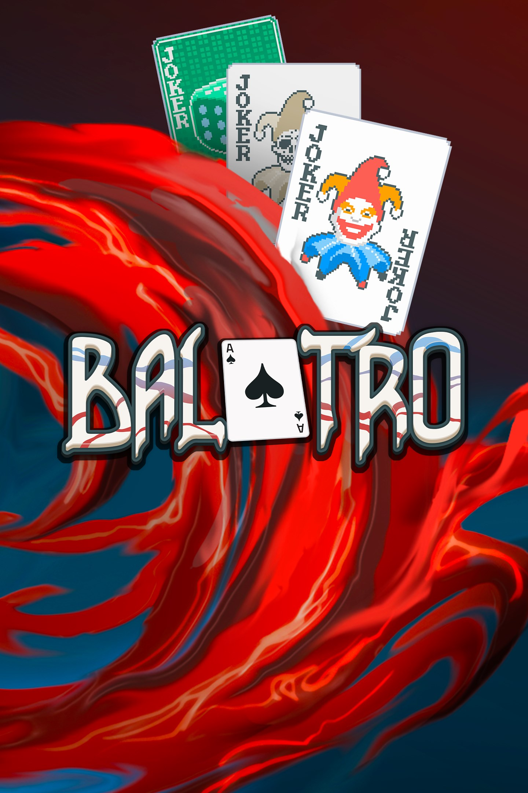
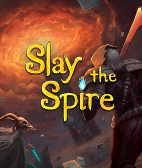

Hollow Knight Silksong
Team Cherry

Released in 2025, created by Team Cherry over the course of 7 years. What was originally meant to be DLC for their previous game Hollow Knight bloomed into a full game.
This is an incredible metroidvania with amazing bosses, smooth movement, and a decently difficult campaign.
Where to buy:
Genres:
System Specs (Windows)
Minimum:
o Requires a 64-bit processor and operating system
OS: Windows 10 version 21H1 (build 19043) or newer
Processor: Intel Core i3-3240, AMD FX-4300
Memory: 4 GB RAM
Graphics: GeForce GTX 560 Ti (1GB), Radeon HD 7750 (1GB)
DirectX: Version 10
Storage: 8 GB available spaceRecommended:
Requires a 64-bit processor and operating system
OS: Windows 10 version 21H1 (build 19043) or newer
Processor: Intel Core i5-3470
Memory: 8 GB RAM
Graphics: GeForce GTX 1050 (2GB), Radeon R9 380 (2GB)
DirectX: Version 10
Storage: 8 GB available space
Balatro
LocalThunk
In 2024 the developer LocalThunk decided to release the greatest time waister of all time.
In this game you will play poker hands with the goal of winning enough chips to clear the blind (level).
Every poker hand has a different base mult (base multiplier) and every card have a base chip ammount.
After every blind you will enter a shop where you can buy several things, but the highlight among them is the jokers.
Every joker has a unique effect. They can be anything from adding mult when a condition if completed or does it regardless. Every joker works together to get a higher number.
This will be one of the most satisfying and adictive games you will ever play.

Where to buy:
Genres:
System Specs (Windows)
Minimum:
Requires a 64-bit processor and operating system
OS *: Windows 7, 8, 10, 11 x64
Processor: Intel Core i3
Memory: 1 GB RAM
Graphics: OpenGL 2.1 compatible graphics card, integrated graphics
Storage: 150 MB available spaceRecommended:
There is no recommended specs
Hades 2
SuperGiant

In 2024, developer Supergiant Games released the highly anticipated sequel to one of the greatest roguelikes of all time: Hades II.
In this game, you play as Melinoë, Princess of the Underworld, on a mission to defeat Chronos, the Titan of Time. Along your journey, you will battle through hordes of mythical enemies, powerful bosses, and dangerous environments inspired by Greek mythology.
Every run is different, with a variety of weapons, each offering unique playstyles and abilities. Along the way, you will receive boons from the Olympian gods, granting you powerful upgrades and special effects that can completely change how you fight. Combine different boons, weapons, and upgrades to create devastating builds and become stronger with every run.
Between runs, you can meet a variety of memorable characters, uncover secrets, gather resources, and upgrade your abilities to prepare for your next attempt.
This game Is also quite adictive and good for quick, 1 run sessions whenever its convinient
Where to buy:
Genres:
System Specs (Windows)
Minimum:
Requires a 64-bit processor and operating system
OS: Windows 10 64-bit
Processor: Dual Core 2.4 GHz
Memory: 8 GB RAM
Graphics: GeForce GTX 950, Radeon R7 360, or Intel HD Graphics 630
Storage: 11 GB available spaceRecommended:
Requires a 64-bit processor and operating system
OS: Windows 10 64-bit
Processor: Quad Core 2.4ghz
Memory: 16 GB RAM
Graphics: GeForce RTX 2060, Radeon RX 5600 XT, or Intel Arc A580
Storage: 11 GB available space
Slay the Spire
MegaCrit
Slay the Spire is a game made in 2019 by developers Mega Crit about climbing a giant tower and killing monster
Your journey begins at the bottom of a mysterious spire. As you make your way toward the summit, you'll encounter everything from ordinary enemies to enormous bosses that will put your strategies to the test.
Combat revolves around building a deck of cards, with each card offering different attacks, defenses, and abilities. But winning isn't just about having strong cards. You'll need to carefully manage your resources, plan your next moves, and figure out which cards work best together.
As you climb higher, you'll discover powerful relics, collect new cards, visit mysterious merchants, and make decisions that could either save your run or end it entirely. With multiple playable characters, each bringing their own unique mechanics and strategies, there's always another combination to experiment with.
And just when you think you've mastered the game, the Spire finds another way to humble you.

Where to buy:
Genres:
System Specs (Windows)
Minimum:
OS *: Windows XP, Vista, 7, 8/8.1, 10
Processor: 2.0 Ghz
Memory: 2 GB RAM
Graphics: 1Gb Video Memory, capable of OpenGL 3.0+ support (2.1 with ARB extensions acceptable)
Storage: 1 GB available spaceRecommended:
There is no recommended specs
No Mans Sky
Hello Games

Released in 2016, No Man's Sky was an ambitious space exploration game developed by Hello Games. Despite a rocky launch, the developers spent years improving the game, turning it into one of the most expansive and content-filled space exploration games available.
In this game, you explore a practically endless universe filled with billions of procedurally generated planets, each with its own unique environments, creatures, plants, and resources.
You can explore alien worlds, build bases, discover new species, collect spaceships, trade resources, and even engage in massive space battles. There is an incredible amount of freedom, allowing you to decide whether you want to be an explorer, trader, fighter, or builder.
The game also features multiplayer, allowing you to explore the universe and build things alongside other players.
Where to buy:
Genres:
System Specs (Windows)
Minimum:
Requires a 64-bit processor and operating system
OS: Windows 10/11 (64-bit versions)
Processor: Intel Core i3
Memory: 8 GB RAM
Graphics: Nvidia GTX 1060 3GB, AMD RX 470 4GB, Intel UHD graphics 630
Storage: 15 GB available space
VR Support: SteamVRRecommended:
There is no recommended specs